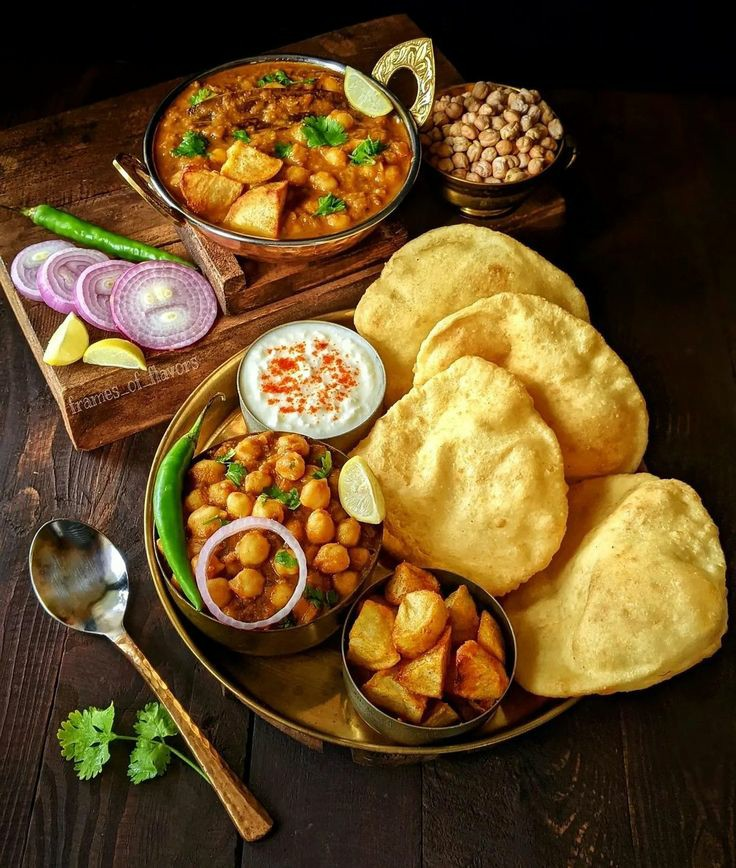

Channe Puri Recipe
A delicious and satisfying North Indian dish.
Preparation Time
- Prep: 30 minutes
- Cook: 45 minutes
Ingredients
For the Channe (Chickpea Curry):
- 1 cup dried chickpeas (soaked overnight)
- 1 onion, chopped
- 2 tomatoes, chopped
- 2 green chilies, chopped
- 1 teaspoon ginger-garlic paste
- 1 teaspoon cumin seeds
- 1 teaspoon coriander powder
- 1/2 teaspoon turmeric powder
- 1/2 teaspoon red chili powder
- 1/2 teaspoon garam masala
- Salt to taste
- 1 tablespoon oil
- Water as needed
For the Puri:
- 2 cups whole wheat flour
- 1/2 teaspoon salt
- 1 tablespoon oil
- Water as needed
- Oil for frying
Instructions
Making the Channe:
- Pressure cook the soaked chickpeas with 4 cups of water for 3-4 whistles. Let the pressure release naturally.
- Heat oil in a pressure cooker or a deep-bottomed pan. Add cumin seeds and let them splutter.
- Add chopped onions, green chilies, and ginger-garlic paste. Sauté until the onions turn golden brown.
- Add chopped tomatoes and cook until they become soft and mushy.
- Add coriander powder, turmeric powder, red chili powder, garam masala, and salt. Mix well and cook for a few minutes.
- Add the cooked chickpeas and enough water to make a gravy of your desired consistency.
- Bring to a boil, then reduce heat and simmer for 10-15 minutes, or until the flavors are well-combined.
- Garnish with chopped coriander leaves.
Making the Puri:
- In a large bowl, combine whole wheat flour, salt, and oil. Mix well.
- Gradually add water and knead into a soft dough. Cover and let it rest for 15-20 minutes.
- Divide the dough into small balls. Roll each ball into a thin, round circle.
- Heat oil in a deep frying pan. Carefully drop the rolled puri into the hot oil and fry until golden brown on both sides.
- Remove the puris from the oil and drain on paper towels.
Nutrition
| Calories | 300 kcal per serving |
|---|
| Protein | 15g |
|---|
| Carbs | 40g |
|---|
| Fat | 12g |
|---|